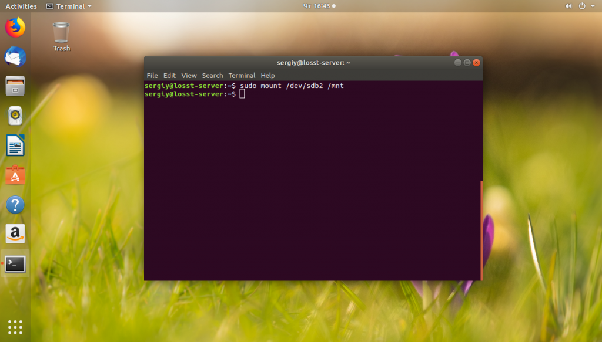

Экспорт настроек
----------------------------------------------------------------------------------------------------
---------------------------------------------------------------------------------------------------------------------
Шаг 1: Сохраните список установленных пакетов
Выполните следующую команду на исходном компьютере, чтобы сохранить имена установленных пакетов в ~ / pkglist:
sudo dpkg --get-selections | sed "s/.*deinstall//" | sed "s/install$//g" > ~/pkglist
Шаг 2: перенесите ваш конфиг
Используйте scp или rsync или даже флешку для переноса вашего домашнего каталога (~ / , ~ /. ), Списка источников (/etc/apt/sources.list) и любых других файлов, которые вы настроили или установили (например, apache config в / и т. д. или программное обеспечение в / opt) с исходного компьютера на целевой.
Шаг 3: Установить пакеты
На целевом компьютере выполните следующую команду в сеансе отказоустойчивого терминала, чтобы установить ваши пакеты:
sudo aptitude update && cat pkglist | xargs sudo aptitude install -y
Извлечь из:
http://eggsonbread.com/2010/01/28/move-ubuntu-to-another-computer-in-3-simple-steps/
===================
2. Перенос Linux утилитой cp
Далее можно запускать сам перенос Linux на другой диск. Для этого запустите утилиту cp с опциями -a, -r и -x. Первая опция включает сохранение исходных прав и метаданных файла, вторая - рекурсивный обход файловой системы, а третья ограничивает рекурсию только текущей файловой системой:
sudo cp -rxa / /mnt/=========================
3. Перенос Linux утилитой tar
Это альтернативный вариант переноса, если вы не хотите использовать cp, то можете применить tar. Чтобы сразу перенести файлы в другое расположение, нужно создать туннель, на одном конце которого данные будут запаковываться, а на другом - распаковываться:
sudo tar -cpv --one-file-system / | sudo tar -x -C /mnt
Опция -p - заставляет утилиту сохранять метаданные файлов при переносе. Опция --one-file-system указывает, что утилита будет брать файлы только из корневой файловой системы, поэтому все примонтированые файловые системы, как и в предыдущем варианте, будут пропущены. Поэтому каталоги /boot и /home вам придётся копировать аналогичной командой. Или же можно не использовать эту опцию и передавать всё, кроме ненужного:
sudo tar -cpv --exclude /mnt --exclude /dev --exclude /sys --exclude /proc --exclude /tmp --exclude /run / | sudo tar -x -C /mnt/
Также вы можете создать архив, а потом его куда-нибудь скопировать, чтобы иметь резервную копию системы:
sudo tar -cvpzf system.tar.gz --exclude system.tar.gz --one-file-system /
Вместо опции --one-file-system можно использовать опции --exclude, чтобы исключить ненужные каталоги, как в предыдущей команде. А для распаковки используйте команду:
sudo tar xvzf system.tar.gz -C /mnt
Здесь, /mnt - это каталог, в который нужно извлечь файлы архива.
====================================================
Главная
Перенос Linux на другой диск
Перенос Linux на другой диск
Инструкции Обновлено: 1 апреля, 2019 27 admin
Такая задача возникает достаточно редко. Обычно, проще переустановить систему заново, чем переносить уже установленную версию на другой жёсткий диск или другой раздел. Но если у вас там есть важные программы, которые нежелательно удалять, или вы меняли настолько много настроек в системе, что её установка заново займёт намного больше времени, чем её перенос, то перенос будет предпочтительнее.
В этой статье мы рассмотрим, как перенести Linux на другой диск с помощью утилиты cp или архива tar. Второй способ интересен ещё тем, что вы можете создать резервную копию всей системы, а затем просто восстановить её при возникновении проблем.
Как перенести Linux на другой диск
Поскольку все данные, настройки и объекты операционной системы Linux - это файлы, то вы можете перенести свою операционную систему куда нужно, просто скопировав все нужные файлы. В Windows так де просто не получится, так, как там более сложная файловая система со сложными зависимостями.
Сначала рассмотрим, как использовать утилиту cp для переноса файлов операционной системы. В папку /mnt примонтируйте раздел, на котором будет располагаться новый Linux. Например, это /dev/sdb1:
sudo mount /dev/sdb1 /mnt

Теперь нужно рекурсивно скопировать все файлы из текущего корня в нашу папку /mnt. Лучше всего это делать, загрузившись с LiveCD диска, тогда точно все нужные данные будут сохранены. Но это не обязательно, вы можете делать перенос и работающей системы, только перед этим остановите все запущенные базы данных и сервисы по максимуму, чтобы они сохранили свои настройки и вы ничего не потеряли в новой версии системы. Например, если у вас запущена база данных MariaDB или MySQL, то её нужно остановить:
sudo systemctl stop mariadb
Аналогично сделайте со всеми другими не важными для операционной системы сервисами. Также очистите корзину, кэш пакетного менеджера и другие ненужные файлы, чтобы они не занимали место в архиве или новой системе.
Далее можно запускать сам перенос Linux на другой диск. Для этого запустите утилиту cp с опциями -a, -r и -x. Первая опция включает сохранение исходных прав и метаданных файла, вторая - рекурсивный обход файловой системы, а третья ограничивает рекурсию только текущей файловой системой:
sudo cp -rxa / /mnt/
Поскольку будут копироваться только файлы из текущей файловой системы, то если ваши каталоги /boot и /home находятся на других разделах, то их нужно скопировать отдельно:
sudo mkdir /mnt/{boot,home}
sudo cp -rxa /boot /mnt/boot/
sudo cp -rxa /home /mnt/home/
Если вам не нужна домашняя папка, то вы можете её не копировать.
Это альтернативный вариант переноса, если вы не хотите использовать cp, то можете применить tar. Чтобы сразу перенести файлы в другое расположение, нужно создать туннель, на одном конце которого данные будут запаковываться, а на другом - распаковываться:
sudo tar -cpv --one-file-system / | sudo tar -x -C /mnt
Опция -p - заставляет утилиту сохранять метаданные файлов при переносе. Опция --one-file-system указывает, что утилита будет брать файлы только из корневой файловой системы, поэтому все примонтированые файловые системы, как и в предыдущем варианте, будут пропущены. Поэтому каталоги /boot и /home вам придётся копировать аналогичной командой. Или же можно не использовать эту опцию и передавать всё, кроме ненужного:
sudo tar -cpv --exclude /mnt --exclude /dev --exclude /sys --exclude /proc --exclude /tmp --exclude /run / | sudo tar -x -C /mnt/
Также вы можете создать архив, а потом его куда-нибудь скопировать, чтобы иметь резервную копию системы:
sudo tar -cvpzf system.tar.gz --exclude system.tar.gz --one-file-system /
Вместо опции --one-file-system можно использовать опции --exclude, чтобы исключить ненужные каталоги, как в предыдущей команде. А для распаковки используйте команду:
sudo tar xvzf system.tar.gz -C /mnt
Здесь, /mnt - это каталог, в который нужно извлечь файлы архива.